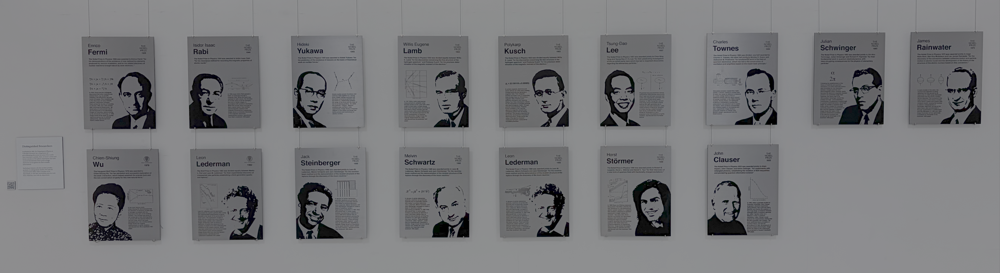
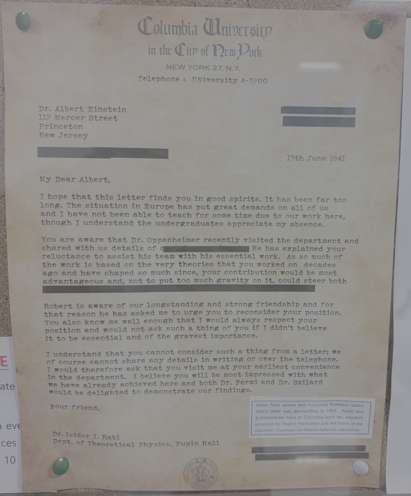

我与哥大
昨晚睡觉前刷帖子，有人说，连胡适都不能免于摸鱼，每天打牌；虽然总是“吾日三醒吾身”，但总还是忍不住第二天去打牌。虽然，道理是人要适当放松，但我的关注点落在了胡适上。是啊，胡适是在哥大拿到的Ph.D.学位。或许我也该开始记录“我与哥大”。
其实在之前，我就想写一篇博文来讲述我这段时间在哥大的见闻了，但是磨磨蹭蹭一直到今天晚上才开始提笔。说实话，在之前，其实我对哥大并不了解，甚至更多的是负面新闻，比如协和4+4的某女士就是从Barnard College毕业的。所以，当我收到校长为我校的新诺贝尔奖经济学得主祝贺的邮件之前，我一直以为，哥大实际上只是Ivy中的一员，仅此而已（或许换一种视角来看，Ivy一员或许本身就很厉害了）。
曼哈顿计划中的哥大
Pupin楼位于哥大主校区的西北角，属于乾卦，五行属金，杀伐之气。或许这就是Pupin与Manhattan Project关系匪浅的原因之一吧。从校内进入Pupin的大门，左手边这面墙上记录了所有哥大物理学的荣光：费米、李政道、吴健雄赫然在列。

哥大物理系的网站上详细记录了与Manhattan Project的一切。第二次世界大战中，轴心国的德国科学家Otto Hahn和Fritz Strassman首先实现了核裂变，放出了巨大的能量。盟军阵营认为如果核裂变技术掌握在轴心国手中，会导致更加惨烈的战争后果。所以在得知德国首先实现了核裂变之后，Niels Bohr找到了Enrico Fermi想要快速推进盟军阵营的核裂变技术。之后，Fermi和Dunning等人使用在哥大Pupin楼地下室的Cyclotron，成功实现了实验室的核裂变实验。但当时实现核裂变实验并不足够，仍然缺少技术分离U-238，提取更纯净的U-235。所以之后，由Dunning和Harold Urey领导的团队，采用“gaseous diffusion”办法，成功提纯了铀同位素。后来，在美国的Oak Ridge National Lab使用这项提纯技术，制造出了Little Boy原子弹，这枚核弹最终落在了广岛市。
参与Manhattan Project的学者太多，但是有个人在这里，我必须提起——Chung Kwai Lui女士。她虽然毕业于Oregon State University，但她和她的先生Hsin Hsu Wei共同创立了Wei Family Private Foundation每年给OSU Science or Mathematics和CU EE的华人学生提供奖学金，支持了很多在异国他乡求学时华人学生。Salute！
我曾去寻找这段辉煌的历史，走遍了Pupin的地下几层楼，可惜再也找不到当时的Cyclotron。除了Pupin进门的那面墙，再也找不到先辈的痕迹，但是那种精神或许会在哥大物理系永存……
最后附上一封被解密的Isidor Rabi写给Albert Einstein的信：
